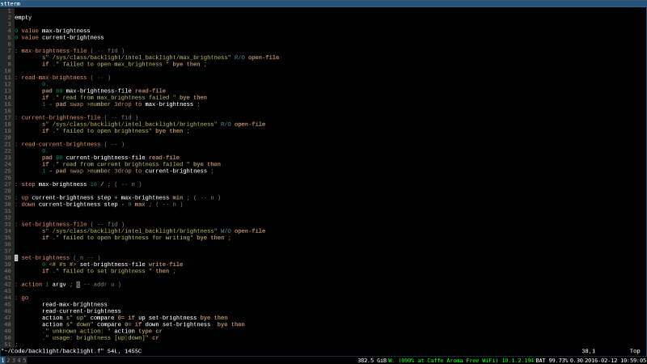
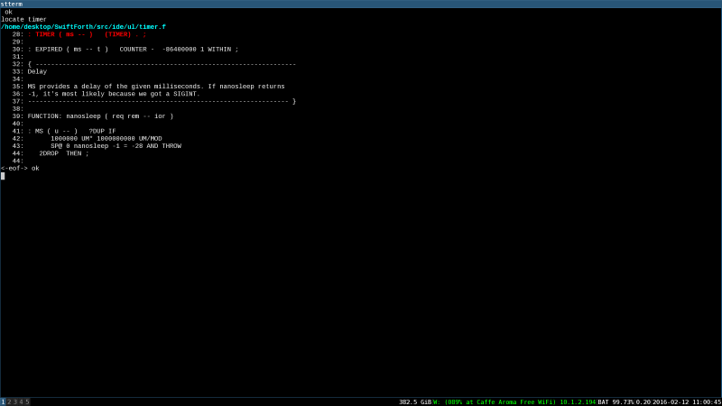
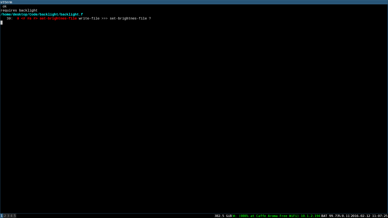
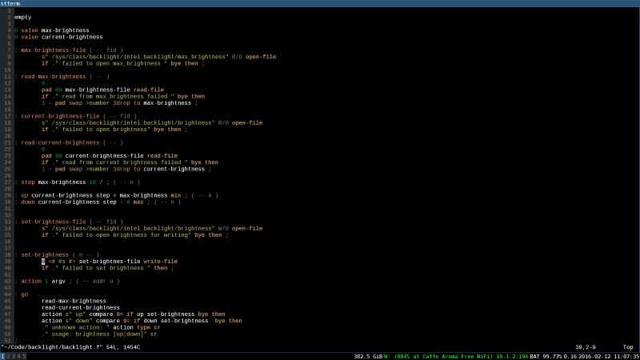
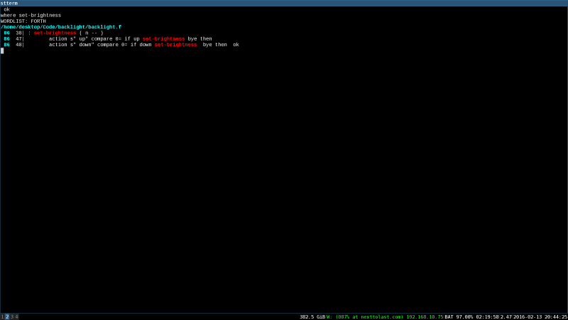
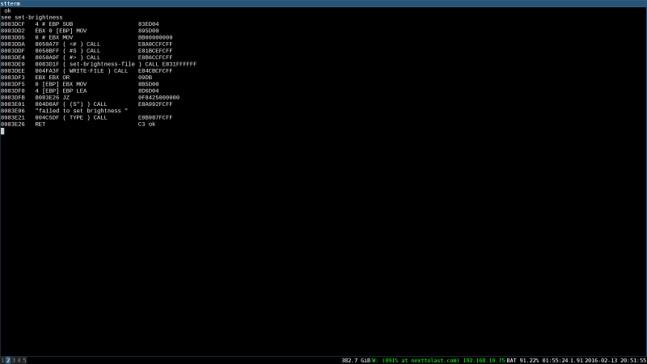
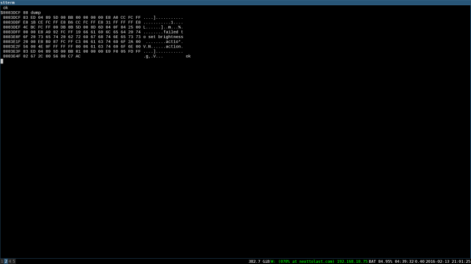
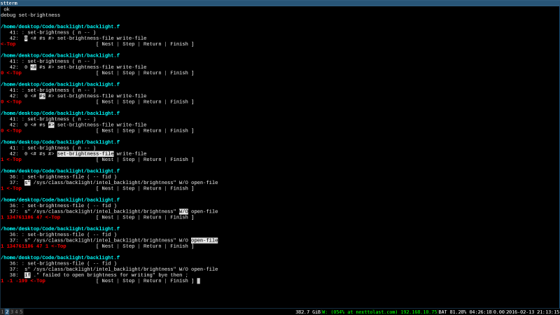

DAVE'S LIFE ON HOLD
The Unreasonable Awesomeness of SwiftForth
For the past couple weeks, I have been building programs with SwiftForth and found myself constantly amazed by the system. While the $399 price tag might put off many would be programmers, the quality of the entire system easily justifies the investment. And it is an investment.
Over the past several years, I've occasionally toyed with using the evaluation version that Forth Inc. provides for free, but each time I ended up choosing an open alternative, or going with another language entirely. Quite frankly, the experience of using the evaluation version doesn't do the full version justice. It is not that the evaluation version lacks the ability to produce programs, it is actually surprisingly featureful. No what is missing is the most important part of the system, the complete source code.
Locating and Editing Code
When working in the SwiftForth environment, everything in your environment is interactive. You want to find the source code to a function, method, word, you simply type locate word:
locate set-brightness /home/desktop/Code/backlight/backlight.f 38: : set-brightness ( n -- ) 39: 0 <# #s #> set-brightness-file write-file 40: if ." failed to set brightness " then ; 41:
It will then print out the file from which the word is included, and the contents of that source with line numbers. If you want to make a change to it you can type edit word, and it will open up your default editor with the cursor at the correct line number:

This allows you not only to edit your own code, but bits of the core system itself! If you type locate word on any of the core words defined in the system, it will work exactly as if it were your own code:

You can also edit the core system code as well. This applies to every aspect of the SwiftForth system. The full system is written in Forth, and is fully self hosted, meaning you can build and rebuild SwiftForth within SwiftForth. By being able to modify and build the base system dynamically, it becomes possible to experiment with changes to the core of the language and the environment itself.
This dynamism also extends to other aspects of development. Let's say we have a typical typo bug in our source. When we load it via a requires file statement, we will be presented with a error message:

By pressing g enter SwiftForth will open our editor at exactly the offending line:

It is then a simple matter of making your edits and testing it again. And testing is something the Forth programming language excells at. Since Forth encourages writing small definitions which do only one thing well, it is easy to test each definition as you go. It is not unusual to write a word, and then refactor it into smaller words, testing each as you write them interactively, and then copying your tested code into the source file.
The Forth environment also supports finding all instances of a word used in your program. By typing where word and you'll find all the instances of that word in your system. Not only will it display all of the places you used it in your code, it will also show all of the places in the system that rely upon it as well:

Disassembling and Debugging Programs
While being able to locate and edit your code is nice, there are times when you need to know how your code actually works under the hood. This is another area in which SwiftForth excells far beyond the competition. Should you want to see what the definition of your word compiles to you simply type see word:

This will show you the output of the built in disassembler, complete with comments referencing the Forth definitions when found. Unlike most programming environments, this system uses a compile as you code strategy. This means the assembler output is available for inspection during edit time. This means you can verify that the output of the optimizer is doing the right thing for your use case. Should the optimizer do something screwy, you also can dynamically turn it on and off with +OPTIMIZER and -OPTIMIZER words (or the shorter +OPT and -OPT). When compared with trying to debug a similar issue with GCC, the SwiftForth is incredible. If you've ever tried to track down an optmizer bug in a complex C++ application, you'll understand how advantageous this approach is.
Now disassembling is pretty useful, and the DASM keyword will generate disassembler readouts for any address in memory. However, it is sometimes handy to just dump a region of memory to inspect data. The dump word does just that:

It takes an address and a run length to dump out in a format similar to that of the hexdump utility on most Unix systems. There are also words wdump, udump, idump and hdump which output different interpretations of the data, as either collections of shorts, unsigned integers, signed integers, or hexadecimal integers respectively. Any area of program memory can be dynamically inspected, tweaked, and observed durning development. This makes debugging a wide range of memory usage errors much easier than in typical debugger environments.
And for those times when you need to step through the execution of a particular hairy bit of logic, there is a traditional step based debugger which you can include via the requires singlestep. Unlike most environments, however, you can scope which definitions the single stepper applies to by using the [DEBUG and DEBUG] words to encapsulate the words you want to debug. This is incredibly handy when you don't want to try and figure out where you need to add breakpoints. You can then also interactively start single stepping from any given definition contained within those delimiting words by issuing the command debug word.

This makes debugging code interactively more pleasurable than any other debugger I've had the pleasure of using. It has the immediacy of the Smalltalk / Self debugger, but due to the ability quickly get to the lowest levels of the code, it allows you to truly understand how your program is working in a way most systems don't.
Some closing thoughts
A large part of why I titled this post unreasonable is that after working with SwiftForth for two weeks, I can't for the life of me explain why we should expect any less from any of our programming environments. SwiftForth is unreasonably awesome because so many other tools are unreasonably bad. I have programmed in over 20 languages professionally over the past 16 years, and I have yet to find a more comprehendsive system for developing software. The supplied documentation is excellent, the system is discoverable, the source code is comprehendible, and the system is elegant. It demonstrates what 43 years of continuous development and improvement can acheive.